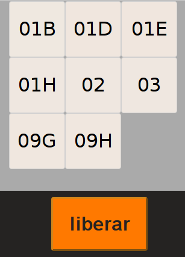
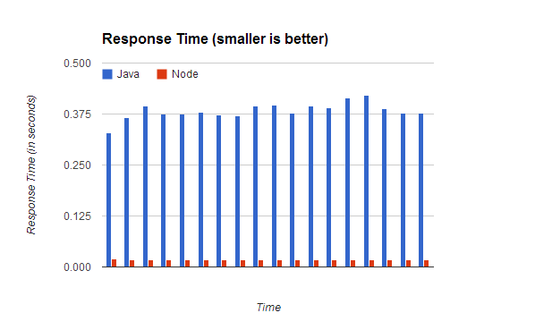
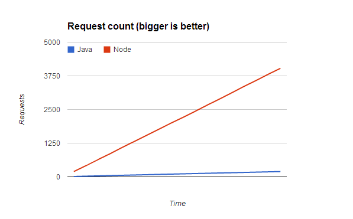

Benvenuto é um webapp para auxiliar a distribuição de mesas em restaurantes. Este artigo detalha o processo de reescrever um aplicativo do stack Java no stack Node.js.
Pontifícia Universidade do Rio de Janeiro
Departamento de Informática
Benvenuto Node
Estudo de caso: Migração de um Web-App Java para Node.js
Orientador:
Edmundo Torreão
Aluno:
Guilherme Rodrigues
6 de Dezembro de 2012
Benvenuto é um webapp para auxiliar a distribuição de mesas em restaurantes. Este artigo detalha o processo de reescrever um aplicativo do stack Java no stack Node.js. O sistema tem duas telas principais: - Um mapa de mesas, no qual todas as mesas são desenhadas na tela na cor verde ou vermelha, dependendo se a mesa está atualmente livre ou ocupada. Aqui, pode-se selecionar mesas e ocupá-las. - Uma lista de mesas atualmente ocupadas, onde as mesas têm uma indicação de cor dependendo de há quanto tempo estão ocupadas. Aqui, pode-se selecionar mesas e liberá-las.
Interface da Recepção

Interface do Salão

Um requisito fundamental do sistema é que as atualizações sobre o mapa de mesas devem ser percebidas em realtime por todos os clients. A primeira versão do sistema foi construída usando um stack semi-tradicional de desenvolvimento web:
- Play Framework 1.2 (2011) - um framework web full-stack Java, que utiliza o servidor JBoss Netty. Tem como principais objetivos a escalabilidade e simplicidade de desenvolvimento. Favorece aplicações "stateless" - não dá suporte a sessões.
- PostgreSQL 9.0 (2010) - um banco de dados relacional SQL open-source.
- KnockoutJS 2.0 (2011) - uma biblioteca Javascript que implementa o padrão MVVM, permitindo data-bind entre objetos Javascript e o DOM, eliminando a necessidade de grandes quantidades de código JQuery para dinamizar a interface.
Esse artigo irá discutir as vantagens e dificuldades encontradas ao realizar o port deste aplicativo para um stack de tecnologias mais recentes e mais orientadas a single-page applications. O stack escolhido foi:
- Node.js (2011) - um runtime de Javascript no server-side. É event-driven e utiliza I/O assíncrono, com objetivo de maximizar a escalabilidade. Sua principal vantagem é permitir a utilização da mesma linguagem tanto no browser quanto no servidor. Isso implica em grandes facilidades para o desenvolvimento.
- Express 3.0 (2012) - um framework web para Node.js.
- Socket.IO - uma biblioteca para comunicação assíncrona no ambiente Node.js que expõe uma API de publish/subscribe transparente entre clientes e servidor.
- CoffeeScript - uma pequena linguagem que compila para Javascript. Copia algumas linguagens mais recentes como Ruby e Python nos seus melhores pontos e esconde as piores partes do Javascript.
- Redis - Um banco de dados chave/valor extremamente rápido, em memória, voltado para datasets pequenos.
Introdução
Parte 1 - Motivação e Principais Dificuldades
ORM e a dança de formatos
Ao desenvolver um aplicativo "desktop", o arquiteto de software tem total controle sobre todas as partes do sistema: a persistência, a lógica de negócio e a visualização e interação.
Naturalmente, é comum utilizar-se de apenas uma linguagem de programação para escrever todas as partes de um aplicativo, a fim de minizar a complexidade de comunicação entre os módulos ou partes do sistema. Entretanto, ao escrever aplicativos web, tipicamente encontram-se algumas severas restrições.
Uma das maiores restrições é aquela inerente da visualização e interação com o usuário, que serão necessariamente expressas através de um documento HTML e um web browser. Dessa forma, introduz-se, no mínimo, um nível de tradução entre a lógica de negócio, escrito em alguma linguagem, e a apresentação.
Tipicamente, os aplicativos web modernos se utilizam ainda de Javascript para dinamizar o conteúdo do documento HTML e permitir interações mais naturais, independentes do ciclo de request e response.
Uma outra restrição é a comum necessidade de escalabilidade e utilização multi-usuário do sistema. Isso prejudica a escolha de ferramentas de persistência mais simples e diretamente disponíveis nas linguagens (como, em Java, a serialização de objetos). A escolha mais comum para persistência é um banco de dados relacional, como MySQL, PostgreSQL e outros.
Assim, introduz-se mais um nível de tradução no aplicativo: a camada de persistência representa os objetos de negócio de uma forma diferente da camada de lógica de negócio, e um componente de ORM (Object Relational Mapping) é utilizado para facilitar essa conversão.
Configura-se, então, a dança dos formatos: no ciclo de vida típico de um objeto, ele vai ser:
- Recuperado de uma tabela de banco de dados relacional
- Transformado em um objeto na linguagem de programação utilizada, o qual também apresenta comportamentos e possivelmente manipulará os seus dados ou de outros objetos
- Transformado em uma representação textual HTML para visualização por um browser
- Transformado em um objeto Javascript para permitir uma interação dinâmica.
- Finalmente, fará todo o caminho de volta até sua tabela relacional.
Todas essas transformações implicam em grande quantidade de código que não se presta diretamente a solucionar os problemas de negócio os quais se propõe resolver o aplicativo.
Comunicação Realtime - Long polling
Muitos aplicativos têm por requisito a comunicação em tempo real entre múltiplos clientes. Até pouco tempo atrás, isso não era possível no ambiente web devido à precariedade dos browsers, e aplicativos tempo real eram tipicamente desktop.
Recentemente, a tecnologia AJAX (Asynchronous JavaScript and XML) permitiu a comunicação com o servidor sem necessitar de uma atualização completa da página. Com isso, foram desenvolvidas algumas técnicas para estabelecer a comunicação em tempo real com o servidor.
Uma das técnicas mais famosas é o long-polling. Ela consiste basicamente de três passos:
- O browser faz um request AJAX para um endpoint no servidor.
- O servidor segura esse request aberto enquanto nenhum evento significativo é gerado pela lógica de negócio
- Quando um evento é gerado, o servidor responde para o browser, que reinicia o ciclo emitindo um novo request.
Essa técnica é utilizada com sucesso pelo Benvenuto, mas ela é sujeita a alguns problemas:
- Se um request AJAX é interrompido, não existe nenhum outro jeito do servidor notificar o cliente de novos eventos. Assim, a implementação deve ser resistente a quedas de conexão e saber reestabelecer o pedido sempre que ocorrerem problemas.
- Browsers mobile estão sujeitos a muitas interrupções que podem parar requests AJAX, como entrar em modo sleep, recebimento de chamadas, etc.
- O servidor deve saber lidar com as chamadas de forma eficiente para não trancar threads enquanto segura um request aberto.
Assim, é necessário grande cuidado ao implementar uma solução de long-polling.
Parte 2 - Escolha das Tecnologias e Benefícios Esperados
Node.js e Express 3.0
Node.js é uma plataforma para execução de Javascript. Assim como Ruby e Python, Javascript é uma linguagem dinâmica e interpretada: ela necessita de um programa que interprete seus comandos para um nível mais baixo. No browser Google Chrome, a engine responsável por interpretar Javascript se chama V8. O Node.js utiliza a engine V8 e disponibiliza bibliotecas para transformar o Javascript numa linguagem viável para o server-side.
As vantagens de utilizar o Node.js são muitas, especialmente ao considerar o quesito performance:
- A engine V8 é muito performática, o que por sua vez garante boa performance do ambiente Node.js
- Node.js utiliza um loop de eventos que visa otimizar a performance de operações intensiva em I/O. Alguns benchmarks demonstram que ele é capaz de mais de 4000 requests por segundo, ou 5x mais do que um stack Apache/PHP.
- Menor utilização de memória, comparado com Java e outros frameworks mais "robustos".
- Lida muito bem com múltiplos clientes concorrentes. Alguns benchmarks já conseguiram lidar com mais de 250 mil conexões concorrentes
Mas performance não é o único motivo para utilizar o Node.js. Ao utilizar a mesma linguagem no client e no servidor, é possível reutilizar código entre esses dois ambientes e diminuir a impedância entre eles. Menos conversões significa um código menor e mais focado em resolver os problemas de negócio.
Uma outra notável qualidade do Node.js é sua comunidade e a organização de pacotes em torno do npm (node package manager). Inspirado nas gems do Ruby, o node já nasceu com o conceito de pacotes e a quantidade de bibliotecas open-source cresce em uma taxa frenética.
Um desses pacotes é o excelente Express. Se trata de um framework para desenvolvimento de aplicativos web. Ele oferece um modelo simples para a criação rápida de aplicativos, solucionando muitos problemas comuns como autenticação, manipulação de cookies, etc. Atualmente é o framework web mais utilizado para Node.js.
Socket.IO
Socket.IO é uma biblioteca que oferece comunicação realtime entre um servidor Node.js e seus clientes. Para tanto, ela disponibiliza uma API de publish/subscribe muito simples, acessível de ambos os lados do aplicativo.
Uma vez conectado no servidor Node.js, um cliente pode se inscrever nos tópicos que lhe interessam e enviar mensagens em tópicos, assim como o servidor. Dessa forma, existe uma comunicação transparente entre as partes, independente de qualquer ciclo de request e response.
Como canal de comunicação, o Socket.IO irá preferir utilizar WebSockets se possível, utilizando fall-backs como Flash ou long-polling se necessário. Todos os cuidados são tomados, entretanto, para garantir o recebimento das mensagens pelos clientes e pelo servidor, sem que o usuário da biblioteca tenha que se preocupar com problemas como interrupção de conexão.
A utilização do Socket.IO, portanto, traz benefícios óbvios para o Benvenuto pois descarta a necessidade de uma implementação própria de long-polling, disponibilizando uma forma eficiente e segura de trocar mensagens entre o servidor e os clientes.
Redis
Redis é um banco de dados chave-valor em memória. Ele foca em atender os problemas com datasets pequenos, que caibam completamente na memória principal. Em um banco de dados chave-valor, não existe a noção de uma tabela com campos pré-definidos. Em geral, armazena-se uma string (um valor) com um nome (uma chave). Para acessar esse valor, é preciso ter em mãos a chave.
Dado que a serialização JSON é uma forma muito comum e conveniente de transmitir objetos Javascript, bancos de dado chave-valor vêm sendo utilizados com grande sucesso pelos desenvolvedores do stack Node.js. Basta serializar um objeto e guardar o JSON com uma chave identificadora. Normalmente, utiliza-se o conceito de "namespace" para artificialmente agrupar chaves que se relacionam. Por exemplo, poderíamos guardar um usuario com a chave "app:user:3" onde 3 é o id do usuário.
O banco Redis beneficia o Benvenuto principalmente por simplificar a forma de armazenamento dos objetos, sem necessitar da criação de um "esquema" de banco de dados, e por apresentar um significativo ganho de performance em relação a bancos relacionais, que utilizam pesadamente o acesso à disco.
Parte 3 - Estratégia de migração do server-side
Mimicando a API JSON no Node.js
Escolhidas as tecnologias que desejamos utilizar para escrever a nova versão do Benvenuto, resta a pergunta: Por onde começar?
Ao tomar essa decisão, um ponto foi decisivo: a camada de apresentação deveria ser mantida basicamente imodificada - continuando a consumir JSON de uma API e apresentar a interface com a biblioteca KnockoutJS.
Assim, o primeiro protótipo do aplicativo Benvenuto em Node.js consistiu de uma API mock que retornava apenas JSON estático. Para fazer isso, todas as chamadas que retornavam JSON no serviço antigo tiveram um exemplar de JSON recortado e guardado em um arquivo, que era lido e entregue pelo novo servidor.
Feito isso, passava a ser necessário mimicar de fato o comportamento da API - permitindo, por exemplo, ocupação e liberação de lugares. Para tanto, uma variável em memória passou a guardar todo o JSON estático do mapa de mesas e a ser modificada pelas chamadas à API. O programa passou a apresentar o mesmo comportamento que o serviço antigo, em menos de 200 linhas de código.
Claro, nesse momento ainda não existe a persistência de objetos. A cada "reset" do aplicativo, o estado era perdido. Ainda assim, já é possível perceber que existe uma clara queda de complexidade no código do servidor.
Parte 4 - Estratégia de migração da persistência
Estruturando os dados para um banco chave/valor
Resolvida a camada da API JSON, é preciso estabelecer uma forma conveniente de modelar nossos objetos para uma persistência simples e eficiente utilizando o banco REDIS.
A estrutura original de objetos utilizava-se pesadamente de foreign keys - típico de um banco de dados relacional. Entretanto, foreign keys não são fáceis de utilizar em um banco chave-valor pois não existe suporte nenhum à essa lógica na camada do banco.
Por exemplo, a classe GenericTable, que representa uma mesa, era definida como:
@Entity
@Inheritance(strategy = InheritanceType.SINGLE_TABLE)
@DiscriminatorColumn(name="table_type",discriminatorType=DiscriminatorType.CHAR)
@DiscriminatorValue("N")
public class GenericTable extends Model {
public int maxNumberOfPlaces = 1;
public String label = "";
@OneToMany(cascade = CascadeType.ALL, mappedBy = "table")
public List<Place> places = new ArrayList<Place>();
@Embedded
public Point position;
@ManyToOne
public Layout layout;
(...)
}
E a classe Place, que representa um "lugar" à mesa:
@Entity
@Inheritance(strategy = InheritanceType.SINGLE_TABLE)
@DiscriminatorColumn(name="place_type",discriminatorType=DiscriminatorType.CHAR)
@DiscriminatorValue("N")
public class Place extends Model {
public String label = "";
@Embedded
public Point position;
public int numberOfOccupants;
public Double rotation = 0D;
@ManyToOne
public GenericTable table;
(...)
}
O JSON produzido pela API ao pedir todas as mesas livres resultante:
{
gridSizePixels : 10,
name : "Couveflor-PUC-1",
tables : [ {
class : "models.RoundTable",
id : 2,
label : "01",
places : [ {
id : 3,
label : "01A",
numberOfOccupants : 1,
occupied : false,
rotation : 0.071525864538728,
x : -52,
y : -19
}, {
id : 4,
label : "01B",
numberOfOccupants : 1,
occupied : false,
rotation : 45.2975697722287,
x : -23,
y : -50
}, (...) ],
x : 9,
y : 7
}, {
class : "models.RoundTable",
id : 11,
label : "09",
places : [ {
id : 12,
label : "09A",
numberOfOccupants : 1,
occupied : false,
rotation : 0.071525864538728,
x : -52,
y : -19
}, {
id : 13,
label : "09B",
numberOfOccupants : 1,
occupied : false,
rotation : 45.2975697722287,
x : -23,
y : -50
}, (...) ],
x : 34,
y : 7
} ]
}
Como se pode ver, a estrutura principal consiste em um array de tables, cada uma com seu conjunto de places. Isso representa um grande inconveniente para persistir esses objetos no REDIS, onde não há como facilmente como fazer referência a "objetos filhos".
A solução proposta foi inverter a estrutura - tornando Place o modelo principal. Ele é, afinal, o modelo que serve como referência para as ações de ocupar e liberar, por exemplo.
Finalmente, foi necessário desnormalizar os atributos de Table dentro de cada Place. Isso incorre em um pequeno aumento do tamanho total necessário para representar o mapa de mesas, mas resolve o problema de múltiplas entidades. Um pequeno utilitário foi escrito transformar o formato antigo para o formato novo:
(function() {
var flatPlaces, places, placesC, _u;
placesC = require('./places.js');
_u = require('underscore');
places = placesC.collection;
flatPlaces = function() {
return _u.chain(places.tables).map(function(table) {
var place, _i, _len, _ref;
_ref = table.places;
for (_i = 0, _len = _ref.length; _i < _len; _i++) {
place = _ref[_i];
place.tableId = table.id;
place.tableX = table.x;
place.tableY = table.y;
place.tableClass = table._class;
}
return table.places;
}).flatten().value();
};
places.places = flatPlaces();
places.tables = void 0;
console.log(places);
}).call(this);
Agora, o resultado para a chamada do mapa de mesas produz um resultado muito mais simples:
[
{
"id": 109,
"label": "37",
"numberOfOccupants": 2,
"occupied": false,
"rotation": 0,
"x": 0,
"y": 0,
"tableId": 108,
"tableX": 33,
"tableY": 91,
"tableClass": "models.GenericTable"
},
{
"id": 145,
"label": "53",
"numberOfOccupants": 2,
"occupied": false,
"rotation": 0,
"x": 0,
"y": 0,
"tableId": 144,
"tableX": 49,
"tableY": 130,
"tableClass": "models.GenericTable"
},
{
"id": 147,
"label": "55",
"numberOfOccupants": 2,
"occupied": false,
"rotation": 90,
"x": 0,
"y": 0,
"tableId": 146,
"tableX": 56,
"tableY": 126,
"tableClass": "models.GenericTable"
}, (...)
]
Então, com uma estrutura "planificada", persistir os objetos é simples. O esquema de persistência é o seguinte:
- Uma key de place é formada por "layout", seguido do id do layout, seguido de "place", seguido do id do place. Por exemplo: "layout:1:place:109".
- Um set é utilizado para guardar todas as keys de Places. Ou seja, esse set contém, por exemplo: [layout:1:place:109, layout:1:place:110, layout:1:place:111, (...)]
- Existe um método genérico,
getMultiplePlaces( idsArray )para recuperar n lugares do banco, dado seus id's. - Existe um método que recupera todos os lugares do banco, utilizando o método
getMultiplePlacese o set que contém todos os id's.
Agora, recuperar e persistir um ou múltiplos Places passa a ser trivial, graças a adequação do modelo de dados, e a persistência está implementada.
Parte 5 - Medição de resultados
LOC - Número de linhas de código
Um dos grandes benefícios de se utilizar linguagens dinâmicas é a grande redução do número de linhas de código em relação a linguagens mais verborrágicas como Java.
Utilizando o programa cloc, podemos observar alguns números interessantes.
Language files blank comment code
Java 24 237 32 1200
Com as novas linguagens e as refatorações feitas, chegamos a um resultado incrível em nosso arquivo principal, app.coffee, que contém toda a lógica de API e Persistência:
Language files blank comment code
CoffeeScript 1 30 50 217
Ou seja, uma redução de 5 vezes. Se, como diz Jeff Atwood, tamanho é o inimigo, certamente houve progresso.
Mas e quanto à performance? É possível detectar algum ganho ao utilizar o Node.js e REDIS versus Java e PostgreSQL?
Performance - stress test requests/segundo
Utilizando o utilitário openload, foram realizados testes de performance sobre as duas versões do aplicativo. Para o teste, realizamos chamadas concorrentes a uma URL que devolve todas as mesas do banco de dados, serializadas em JSON. Conforme esperado, a combinação de Node.js com Redis apresentou uma performance esmagadoramente maior que Java e PostgreSQL. No geral, foi observado uma diminuição de 20 vezes no tempo de resposta, e consequentemente, um aumento de 20 vezes no número de requests servidos.
Tempo de Resposta

Número de Requests Servidos

Parte 6 - Conclusão
Principais benefícios da migração
A migração do Benvenuto culminou em muitas lições que, em última análise, podem ser traduzidas em uma noção simples: utilize a ferramenta certa para cada problema.
Claramente, Node.js e suas bibliotecas nasceram para solucionar os problemas de desenvolvimento web, e, por isso, oferecem soluções muito mais naturais. Na persistência, é evidente que, dada a possibilidade, bancos chave-valor em memória são escolhas muito mais sensíveis para uma melhor performance do aplicativo.
Acredito que o stack Java ainda vá sobreviver um longo tempo pois ele tem, de fato, muitos méritos. Entretanto, empresas novas e pequenas devem focar seus esforços nas novas tecnologias, que oferecem soluções muito mais efetivas para os problemas reais da web hoje. A escolha entre novas e velhas tecnologias não é uma opção. Utilizar a linguagem e o ambiente que vai solucionar seu problema de forma mais simples é imperativo.